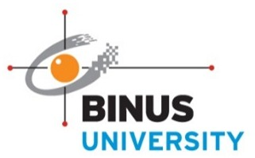

RANCANG BANGUN SISTEM HMI SUMBER TERBUKA UNTUK PLC OMRON BERBASIS PROTOKOL FINS DENGAN VISUALISASI WEB PADA PT XYZ

Oleh
DENNY CHRISNANDA
2502124914
FRANS SEBASTIAN
2502121162
GILANG HANSAGITA
2502124403
COMPUTER SCIENCE STUDY PROGRAM
BINUS ONLINE LEARNING
UNIVERSITAS BINA NUSANTARA
JAKARTA
2025
Industri otomotif global saat ini sedang menghadapi disrupsi besar seiring gencarnya transformasi digital dan tren kendaraan listrik. Kondisi ini ditandai dengan transformasi digital yang secara drastis mengubah industri otomotif dan mengganggu model bisnis tradisional, sehingga peluang bisnis baru terkait Industri 4.0 pun bermunculan dan perusahaan dituntut beradaptasi dengan lingkungan baru (Llopis-Albert, Rubio, and Valero 2020). Pengenalan kendaraan listrik secara bertahap ke pasar global juga membawa efek disrupsi signifikan. Dampak ini diperkuat oleh kebijakan pengurangan emisi gas rumah kaca dan pemanfaatan sumber energi terbarukan, sehingga industri otomotif dipaksa menyesuaikan diri dengan regulasi baru terkait efisiensi energi dan keberlanjutan . Fenomena transformasi digital dan elektrifikasi kendaraan tersebut menuntut produsen komponen otomotif meningkatkan efisiensi produksi serta berinovasi dalam pengendalian proses manufaktur untuk mempertahankan daya saing di pasar global.
PT XYZ sebagai perusahaan manufaktur komponen otomotif nasional tidak lepas dari tekanan tersebut. Bersaing di pasar global, PT XYZ dituntut meningkatkan efisiensi proses produksi serta beradaptasi dengan cepat terhadap teknologi mutakhir. Untuk mencapai hal ini, perusahaan menekankan penerapan konsep Industri 4.0 dalam proses produksinya, antara lain melalui otomatisasi cerdas dan digitalisasi mesin produksi. Dengan menghubungkan sistem mesin melalui teknologi digital dan Internet of Things (IoT), PT XYZ berharap dapat meningkatkan produktivitas dan fleksibilitas operasional, sehingga lebih siap menghadapi perubahan tuntutan pasar otomotif akibat tren kendaraan listrik.
Di lapangan, penerapan strategi digitalisasi di PT XYZ didorong oleh temuan bahwa sebagian besar mesin produksi sudah menggunakan teknologi kontrol canggih. Berdasarkan data internal PT XYZ, sekitar 91% mesin di Departemen Machinery (Special Purpose Machine Maker) menggunakan Programmable Logic Controller (PLC) merek Omron dengan protokol komunikasi FINS (Factory Interface Network Service). Kondisi ini menegaskan perlunya pengembangan sistem Human-Machine Interface (HMI) berbasis web yang kompatibel dengan PLC dan protokol tersebut.
Namun, penggunaan sistem SCADA komersial yang tertutup berpotensi menimbulkan ketergantungan pada vendor tertentu (vendor lock-in). Ketergantungan ini dapat menimbulkan risiko biaya tambahan ketika perangkat keras yang digunakan mengalami disfungsi, dihentikan produksinya (discontinue), atau tidak lagi didukung secara penuh oleh vendor. Perusahaan perlu mengeluarkan biaya besar untuk penggantian modul PLC, upgrade lisensi SCADA, atau penyesuaian perangkat baru yang kompatibel (Banthia 2024). Risiko ini semakin nyata pada sistem tertutup yang tidak menyediakan fleksibilitas integrasi dengan teknologi masa depan.
Oleh karena itu, pengembangan sistem SCADA berbasis web sumber terbuka seperti FUXA menjadi solusi strategis. Dengan menggunakan platform open source seperti FUXA, perusahaan dapat membangun visualisasi proses produksi modern dan mengendalikan mesin-mesin produksi secara waktu nyata melalui antarmuka web yang fleksibel, tanpa terkendala biaya lisensi tinggi maupun batasan teknologi dari vendor tertentu. Pendekatan ini diharapkan mendukung upaya monitoring dan pengendalian produksi PT XYZ dalam rangka efisiensi dan adaptasi teknologi secara menyeluruh.
Rumusan masalah dalam penelitian ini adalah sebagai berikut:
Penelitian ini bertujuan untuk mengimplementasikan dukungan protokol FINS pada FUXA, meliputi:
Pengambilan data secara berkala (polling),
Penulisan nilai ke PLC,
Dukungan Data Acquisition (DAQ),
Integrasi sistem alarm berbasis tag.
Manfaat dari penelitian ini antara lain:
Menyediakan solusi SCADA sumber terbuka yang kompatibel dengan PLC Omron, khususnya untuk industri kecil dan menengah.
Memberikan kontribusi nyata dalam pengembangan perangkat lunak sumber terbuka di bidang otomasi industri.
Penelitian ini memiliki ruang lingkup sebagai berikut:
Fokus pada implementasi komunikasi FINS melalui protokol UDP/TCP.
Penggunaan area memori standar PLC Omron seperti DM, CIO, W, dan sejenisnya.
Pengembangan terbatas pada pembacaan dan penulisan tag serta visualisasi nilai melalui UI FUXA.
Pengujian dilakukan menggunakan perangkat lunak analisis jaringan seperti Wireshark serta PLC fisik maupun simulator.
Hipotesis dari penelitian ini adalah:
Jika protokol FINS berhasil diintegrasikan ke dalam FUXA, maka sistem SCADA tersebut akan mampu membaca dan menulis data dari PLC Omron secara stabil dan akurat.
Performa polling dan DAQ yang dihasilkan akan setara dengan protokol komunikasi lain seperti Modbus.
Adapun sistematika penulisan dalam laporan ini adalah sebagai berikut:
Bab 1 – Pendahuluan: berisi latar belakang, rumusan masalah, tujuan dan manfaat, ruang lingkup, hipotesis, dan sistematika penulisan.
Bab 2 – Tinjauan Referensi: membahas teori dan referensi terkait, seperti protokol FINS, FUXA, dan komunikasi industri.
Bab 3 – Metodologi Penelitian: menjelaskan tahapan dan metode penelitian yang digunakan.
Bab 4 – Implementasi dan Pengujian: menyajikan proses integrasi FINS pada FUXA serta hasil pengujian.
Bab 5 – Kesimpulan dan Saran: berisi simpulan dari hasil penelitian serta rekomendasi untuk pengembangan lebih lanjut.
Industri manufaktur modern sangat bergantung pada sistem otomasi untuk meningkatkan efisiensi produksi, konsistensi kualitas, dan pengendalian biaya. Otomasi industri melibatkan penggunaan perangkat keras seperti sensor, aktuator, dan Programmable Logic Controller (PLC) yang terhubung ke sistem kontrol dan pengawasan seperti SCADA (Supervisory Control and Data Acquisition) (Sastoque and Pérez 2023).
Perusahaan seperti Special Purpose Machine (SPM) Maker sering kali merancang dan membangun mesin otomatis untuk kebutuhan spesifik di pabrik. Mesin-mesin ini biasanya menggunakan PLC dari berbagai vendor, termasuk Omron, Siemens, dan Allen-Bradley. Untuk memantau dan mengendalikan mesin secara efisien, diperlukan sistem HMI dan SCADA yang andal, fleksibel, dan mudah diintegrasikan dengan protokol komunikasi industri (Humaj 2021).
PLC adalah perangkat digital berbasis mikroprosesor yang dirancang untuk mengontrol proses otomatis di lingkungan industri. PLC dapat diprogram untuk menjalankan logika kontrol yang kompleks dan sangat tahan terhadap kondisi ekstrem seperti getaran, suhu tinggi, dan interferensi listrik. PLC berfungsi sebagai otak dari sistem otomasi, mengumpulkan data dari sensor dan mengontrol aktuator berdasarkan logika yang telah diprogram (EMQX 2023).
Agar PLC dapat terhubung ke perangkat lain, diperlukan protokol komunikasi industri. Protokol ini memungkinkan transfer data secara waktu nyata antara PLC dan SCADA. Contoh protokol yang umum digunakan antara lain Modbus, OPC UA, Profibus, EtherNet/IP, dan FINS (Sastoque and Pérez 2023).
FINS (Factory Interface Network Service) merupakan protokol yang dikembangkan oleh Omron untuk memungkinkan komunikasi antar perangkat di dalam jaringan otomasi industri (Humaj 2021). FINS mendukung komunikasi melalui UDP dan TCP. Kelebihan FINS antara lain:
Kompatibel dengan semua seri PLC Omron.
Dukungan komunikasi jarak jauh melalui pengalamatan jaringan.
Struktur data fleksibel, seperti area CIO, DM, WR, HR.
SCADA adalah sistem yang digunakan untuk mengontrol dan memonitor proses industri secara terpusat. SCADA mencakup fungsi utama seperti akuisisi data (DAQ), kontrol jarak jauh, alarm, logging historis, dan visualisasi data melalui HMI (Uddin, Baig, and Iqbal 2022). Akuisisi data (DAQ) berperan penting dalam mengumpulkan nilai-nilai sensor dan status proses secara periodik, yang kemudian disimpan dan dianalisis untuk pengambilan keputusan.
Polling adalah metode yang digunakan oleh SCADA untuk mengambil data dari perangkat lapangan seperti PLC. Dalam polling, sistem SCADA mengirim permintaan ke PLC secara berkala dan membaca respon data yang dikirimkan kembali (Omidi, Salehifar, and Mohammadi 2023).
HMI (Human-Machine Interface) adalah antarmuka antara manusia dan sistem kontrol. HMI menyediakan representasi visual dari proses industri dan memungkinkan operator untuk memantau kondisi sistem dan melakukan intervensi jika diperlukan. Fitur penting dalam HMI meliputi grafik waktu nyata, pengaturan parameter, tampilan alarm, dan trend historis (Thushara 2024).
Perkembangan teknologi web memungkinkan sistem HMI dan SCADA dikembangkan sebagai aplikasi web lintas platform yang dapat diakses melalui browser secara waktu nyata. Teknologi utama yang digunakan antara lain:
HTML (HyperText Markup Language): Bahasa standar untuk menyusun struktur dan elemen-elemen dasar halaman web. Bhanarkar, Paul, and Mehta (2023).
CSS (Cascading Style Sheets): Digunakan untuk mendesain tampilan visual halaman web, termasuk warna, tata letak, dan responsivitas antarmuka. Singh (2014).
JavaScript: Bahasa pemrograman inti untuk interaktivitas pada web, memungkinkan manipulasi DOM, penanganan event, dan komunikasi asynchronous melalui AJAX. Menurut Emmanni (2025) menjelaskan bagaimana penggunaan TypeScript dalam pengembangan framework JavaScript modern seperti Angular meningkatkan keandalan dan skalabilitas aplikasi SCADA berbasis web.
TypeScript: Merupakan superset dari JavaScript yang dikembangkan oleh Microsoft, menyediakan fitur pengetikan statis dan pemrograman berorientasi objek yang kuat. TypeScript digunakan secara luas dalam pengembangan Angular karena meningkatkan skalabilitas, keamanan, dan maintainability kode. Menurut Scarsbrook, Utting, and Ko (2023) keunggulan TypeScript dalam meningkatkan keamanan tipe dan produktivitas tim pengembang dalam proyek perangkat lunak berskala besar, termasuk sistem SCADA.
Node.js: Platform berbasis JavaScript yang berjalan di sisi server (backend). Node.js mendukung arsitektur non-blocking dan event-driven, sehingga sangat cocok untuk aplikasi SCADA yang membutuhkan performa tinggi dan komunikasi data waktu nyata. Menurut Ancona dkk. (2018) menjelaskan bahwa Node.js memiliki karakteristik yang mendukung pemantauan sistem secara waktu nyata, menjadikannya kandidat yang sesuai untuk penerapan pada sistem Internet of Things (IoT) dan SCADA modern.
Angular: Framework frontend modern yang dikembangkan oleh Google. Angular menggunakan TypeScript sebagai bahasa utamanya dan menyediakan pendekatan pengembangan berbasis komponen, dependency injection, serta routing yang efisien. Angular mempermudah pembuatan antarmuka pengguna (HMI) yang dinamis, modular, dan responsif. Menurut Client IO (2023), yang memanfaatkan teknologi frontend modern termasuk Angular untuk membangun antarmuka HMI interaktif.
Dengan kombinasi teknologi tersebut, sistem SCADA berbasis web menjadi lebih fleksibel, ringan, dan dapat diakses lintas perangkat tanpa memerlukan instalasi perangkat lunak tambahan (Thushara 2024).
Salah satu tantangan utama dalam dunia industri adalah ketergantungan terhadap vendor atau vendor lock-in. Sistem SCADA komersial umumnya bersifat tertutup dan berlisensi mahal, sehingga membatasi fleksibilitas pengguna dalam hal integrasi, migrasi, maupun penyesuaian sistem.
Vendor lock-in menyebabkan pengguna hanya dapat menggunakan layanan, protokol, atau perangkat lunak dari penyedia tertentu, sehingga sulit untuk beralih ke penyedia lain tanpa mengeluarkan biaya besar atau menghadapi gangguan layanan. Dalam konteks cloud computing, fenomena ini bahkan menjadi lebih kritis, karena banyak organisasi bergantung pada layanan seperti DBaaS (Database-as-a-Service). Ketika organisasi membutuhkan fitur baru atau terjadi perubahan harga, ketergantungan ini menjadi hambatan besar untuk berpindah platform (Banthia 2024).
Untuk mengatasi vendor lock-in, banyak organisasi mulai mengadopsi pendekatan berbasis teknologi terbuka dan strategi multi-cloud. Salah satu solusi yang relevan dalam konteks SCADA adalah penggunaan sistem open-source seperti FUXA. Dengan menggunakan SCADA open-source, pengguna memperoleh kendali penuh atas kode sumber, arsitektur, dan kemampuan integrasi sistem, sehingga meminimalkan risiko dikunci oleh vendor tertentu.
FUXA adalah contoh SCADA berbasis web yang bersifat open-source dan mendukung berbagai protokol industri seperti Modbus, OPC-UA, dan MQTT. Sistem ini dapat dikustomisasi secara penuh dan tidak tergantung pada penyedia perangkat lunak tertentu (Thushara 2024).
Electron adalah framework open-source yang memungkinkan pengembangan aplikasi desktop lintas platform (Windows, macOS, dan Linux) menggunakan teknologi web seperti HTML, CSS, dan JavaScript, dikombinasikan dengan Node.js dan Chromium. Framework ini banyak digunakan untuk membangun aplikasi desktop modern karena kemampuannya menjalankan kode frontend dan backend dalam satu kerangka kerja yang terintegrasi (Electron Team 2024).
Beberapa keunggulan utama Electron antara lain:
Lintas platform: Aplikasi yang dikembangkan dengan Electron dapat berjalan di berbagai sistem operasi tanpa perlu penulisan kode ulang.
Teknologi web modern: Memanfaatkan ekosistem luas dari JavaScript, TypeScript, dan pustaka web.
Stabil dan enterprise-grade: Digunakan oleh perusahaan besar seperti Microsoft (Visual Studio Code), OpenAI (ChatGPT Desktop), Discord, dan Slack.
Kemudahan integrasi native: Mendukung pemanggilan kode native (C++, Rust, dsb) jika diperlukan.
Dengan bundling Chromium dan Node.js, Electron memberikan kendali penuh terhadap tampilan dan fungsionalitas aplikasi desktop, sekaligus menghindari keterbatasan atau bug dari webview bawaan sistem operasi (Electron Team 2024).
Pengujian (testing) merupakan bagian penting dalam pengembangan sistem SCADA. Pengujian bertujuan untuk memastikan sistem dapat membaca dan menulis data secara benar, menangani kondisi ekstrem, serta menampilkan visualisasi data yang akurat. Pengujian biasanya mencakup:
Unit testing: Memastikan setiap komponen bekerja sesuai fungsi.
Integration testing: Memastikan komunikasi antara komponen berjalan lancar.
System testing: Menguji sistem secara menyeluruh dalam kondisi nyata atau simulasi.
Network traffic analysis: Menggunakan Wireshark atau alat sejenis untuk memantau paket FINS dalam jaringan (Almas and Vanfretti 2014).
| |
|||||
| No. | Penulis (Tahun) | Judul Artikel | Domain Aplikasi | Platform / Teknologi | Tujuan / Kontribusi |
| 1 | Uddin dkk. (2022) | Design and Implementation of an Open-Source SCADA System for a Community Solar-Powered Reverse Osmosis System | Industri Air Bersih | Node-RED, Grafana, InfluxDB, Debian OS, Protokol Firmata, Arduino Mega 2560, Arsitektur SCADA Sumber Terbuka | Merancang dan mengimplementasikan SCADA sumber terbuka untuk sistem desalinasi berbasis tenaga surya. Kontribusi: solusi murah dan terbuka untuk komunitas kecil seperti pedesaan. |
| 2 | Omidi dkk. (2023) | Design and Implementation of Node-Red Based Open-Source SCADA Architecture for a Hybrid Power System | Sistem Pembangkit Listrik Terbarukan Hibrida | Node-RED, Grafana, InfluxDB, MQTT, Firmata, ESP32, Raspberry Pi | Mengembangkan SCADA sumber terbuka untuk sistem pembangkit listrik hibrida. Kontribusi: sistem modular, berdaya rendah, dan biaya rendah. |
| 3 | Almas dkk. (2014) | Open Source SCADA Implementation and PMU Integration for Power System Monitoring and Control Applications | Sistem Tenaga Listrik | SCADA BR, PMU, DNP3, RT-HIL, LabVIEW, Statnett SDK, Pachube | Mengembangkan SCADA BR dan integrasi PMU. Kontribusi: evaluasi sistem tenaga waktu nyata dan batasan polling DNP3. |
| 4 | Salazar dkk. (2024) | ICSNet: A Hybrid-Interaction Honeynet for Industrial Control Systems | Keamanan Siber Sistem Kendali Industri | FUXA HMI, Honeyd, ICSNet, Factory I/O, Mininet, Modbus TCP, IEC-104, ENIP, SNMP, Nmap, Nikto, Proxy | Mengembangkan ICSNet sebagai honeynet hibrida realistis dan modular untuk ICS. Kontribusi: integrasi honeypot interaksi rendah dan tinggi. |
| 5 | Hazdi dkk. (2017) | Desain SCADA Berbasis Web untuk Otomasi Rumah | Otomatisasi Rumah | PLC, SCADA berbasis web, HMI, OPC, MySQL, Visual Basic, Sensor Arus, Jaringan Ethernet | Mengembangkan SCADA untuk otomatisasi rumah dan mengujinya dalam parameter waktu. Kontribusi: aplikasi SCADA dalam rumah tangga dan penyediaan data eksperimental. |
| 6 | Kasun Thushara (2024) | Getting Start with FUXA - Web Based SCADA Tool | SCADA/HMI Industri | FUXA HMI, reTerminal DM, Modbus, MQTT, Debian OS | Mendiskusikan implementasi FUXA SCADA berbasis web di perangkat edge. Kontribusi: solusi murah dan terbuka untuk sistem HMI/SCADA industri. |
Jenis penelitian ini adalah penelitian rekayasa perangkat lunak (software engineering research), yang bertujuan untuk merancang, mengimplementasikan, dan mengevaluasi penambahan dukungan protokol FINS (Factory Interface Network Service) pada sistem SCADA open-source FUXA. Penelitian ini bersifat terapan dengan pendekatan kuantitatif dan kualitatif dalam menguji fungsionalitas dan performa sistem.
Metode yang digunakan dalam pengembangan perangkat lunak ini adalah metode iteratif dan inkremental, dengan tahapan sebagai berikut:
Perangkat Keras: Laptop/PC, jaringan LAN, PLC Omron (atau simulator).
Perangkat Lunak:
FUXA (https://github.com/frangoteam/FUXA)
Node.js, Angular CLI, Git
Wireshark untuk sniffing paket FINS
Visual Studio Code untuk pengembangan
Library Tambahan:
node-omron-fins atau modifikasi client FINS custom
Angular Material untuk UI komponen konfigurasi
Penelitian dilakukan dalam beberapa tahap berikut:
| No | Kegiatan |
| 1 | Studi literatur tentang protokol FINS, SCADA, dan arsitektur FUXA |
| 2 | Perancangan konektor dan struktur konfigurasi perangkat/tag |
| 3 | Implementasi modul konektor dan antarmuka pengguna |
| 4 | Pengujian komunikasi, pengamatan melalui Wireshark |
| 5 | Evaluasi dan dokumentasi hasil integrasi |
Dalam pengembangan aplikasi SCADA berbasis web untuk desktop, penulis menggunakan framework Electron sebagai pembungkus (wrapper) yang mengemas aplikasi Angular dan Node.js ke dalam executable lintas platform. Dengan pendekatan ini, sistem dapat dijalankan sebagai aplikasi desktop independen tanpa perlu instalasi web server terpisah maupun browser.
Arsitektur ini memberikan keuntungan berupa:
Kemudahan distribusi dan instalasi.
Akses langsung terhadap sistem file dan perangkat lokal.
Performa tinggi karena menggunakan versi terbaru Chromium dan V8 engine.
Kemandirian penuh dari browser atau runtime eksternal.
Penggunaan Electron menjadikan aplikasi SCADA dapat digunakan di lingkungan industri yang membutuhkan portabilitas, kestabilan, serta kontrol penuh terhadap platform distribusi.
Topologi sistem yang direncanakan dalam penelitian ini digambarkan pada Gambar 3.1. Diagram tersebut memvisualisasikan arsitektur konektivitas yang akan dikembangkan antara perangkat lunak SCADA sumber terbuka (FUXA) yang dijalankan pada Mini PC dengan delapan PLC Omron CJ2M yang merepresentasikan delapan pos kerja pada suatu lini produksi. Setiap PLC akan dihubungkan melalui jaringan lokal menggunakan protokol FINS berbasis UDP/TCP. Selain itu, sistem dirancang untuk menampilkan informasi performa produksi secara waktu nyata melalui LCD TV yang terhubung langsung ke Mini PC sebagai media dashboard utama.
Diagram ini juga menunjukkan bahwa Mini PC berperan sebagai pusat kendali yang mengatur komunikasi ke setiap titik kontrol (posisi 1 sampai 8) di jalur produksi. Setiap posisi memiliki kombinasi PLC CJ2M dan HMI yang menangani proses otomatisasi lokal. Informasi yang dikumpulkan dan dianalisis oleh FUXA dapat disajikan secara waktu nyata melalui tampilan TV dashboard untuk kebutuhan pemantauan operator.
Pengujian dilakukan untuk memastikan bahwa integrasi protokol FINS pada sistem SCADA FUXA berjalan dengan benar dan andal. Metode pengujian dibagi menjadi dua pendekatan utama, yaitu black-box testing dan white-box testing, sebagaimana dijelaskan berikut ini:
Pengujian black-box berfokus pada aspek fungsional sistem dari sudut pandang pengguna tanpa melihat struktur internal kode. Tujuan utama pengujian ini adalah untuk memverifikasi apakah sistem bekerja sesuai dengan yang diharapkan.
Pengujian Konfigurasi Perangkat: Memastikan bahwa parameter seperti DA1, SA1, Unit Address, dan protocol dapat disimpan dan ditampilkan ulang dengan benar.
Pengujian Pembacaan Data: Mengamati apakah nilai dari PLC dapat ditampilkan di UI (user interface) FUXA secara waktu nyata setelah polling.
Pengujian Penulisan Data: Menguji kemampuan sistem dalam mengubah nilai tag pada PLC dari UI, dan memastikan nilai benar-benar tersimpan di memori PLC.
Pengujian Alarm: Mengaktifkan kondisi pemicu alarm dan mengevaluasi apakah notifikasi muncul sesuai logika yang ditetapkan.
Pengujian DAQ: Memverifikasi apakah data historis disimpan dengan benar dalam sistem logging dan dapat ditampilkan kembali.
Pengujian Antarmuka: Memastikan setiap komponen UI dapat diakses dan tidak menimbulkan error saat digunakan.
Pengujian white-box dilakukan dengan menganalisis struktur internal dari sistem, termasuk logika program, alur data, serta penggunaan sumber daya. Pengujian ini membantu dalam menemukan error tersembunyi dan masalah performa.
Unit Testing Konektor FINS: Menguji fungsi-fungsi internal pada modul server/runtime/devices/fins seperti connect(), read(), write(), dan poll().
Pengujian Event Emitter: Mengevaluasi apakah listener pada konektor dibersihkan dengan benar untuk menghindari memory leak akibat listener ganda.
Pengujian Error Handling: Mengaktifkan simulasi gangguan komunikasi dan melihat apakah mekanisme retry atau error recovery berjalan dengan baik.
Logging dan Debug Output: Memastikan bahwa log debug dapat memberikan informasi cukup untuk pelacakan kesalahan (tracing).
Pengamatan Trafik Jaringan: Menggunakan Wireshark untuk memverifikasi bahwa paket FINS dikirim dan diterima sesuai dengan struktur protokol, termasuk header, command code, dan respons yang sesuai.
Integrasi Client-Server: Menyusuri alur data dari UI (Angular) ke Node.js backend untuk menjamin komunikasi antar komponen berlangsung tanpa error.
Almas, M. S. and L. Vanfretti (2014). “Open Source SCADA Implementation and PMU Integration”. In: IEEE PES General Meeting.
Ancona, Davide dkk. (2018). “Towards Runtime Monitoring of Node.js and Its Application to the Internet of Things”. In: arXiv preprint arXiv:1802.01790. doi: 10.48550/arXiv.1802.01790. url: https://arxiv.org/abs/1802.01790.
Banthia, Bakul (Aug. 13, 2024).
Understanding the Risks of Cloud Vendor Lock-In. Disaster Recovery Journal. Tessell. url:
https://drj.com/industry
Bhanarkar, Noorkaran, Aditi Paul, and Ashima Mehta (2023). “Responsive Web Design and Its Impact on User Experience”. In: International Journal of Advanced Research in Science, Communication and Technology 50. Accessed: 2025-07-19, pp. 50–55. doi: 10.48175/ijarsct-9259. url: https://resmilitaris.net/uploads/paper/71c5ba28e79bacafb5bcd0f4dc298d3a.pdf.
Client IO (2023). “SCADA HMI Demo using Angular and JointJS+”. In: JointJS Official Demos. Accessed: 2025-07-19. url: https://www.jointjs.com/demos/scada.
Electron Team (2024). Why Electron. Accessed: 2025-07-18. ElectronJS. url: https://www.electronjs.org/docs/latest/why-electron.
Emmanni, Phani Sekhar (2025). “The Role of TypeScript in Enhancing
Development with Modern JavaScript Frameworks”. In: International
Journal of Scientific and Engineering Research (IJSR) 11.1. url:
https://www.researchgate.net/publication/380361058
EMQX (2023). “Omron FINS Protocol Overview”. Accessed July 2025.
Humaj, P. (2021). “Communication – Omron FINS”. IPESOFT Blog.
Llopis-Albert, Carlos, Francisco Rubio, and Fernando Valero (2020). “Impact of digital transformation on the automotive industry”. In: Technological Forecasting and Social Change 162, p. 120343. doi: 10.1016/j.techfore.2020.120343.
Omidi, Mohammad, Majid Salehifar, and Amir Mohammadi (2023). “Design and Implementation of an Open Source SCADA System for Monitoring a Hybrid Renewable Power System”. In: Energies 16.5, p. 2229. doi: 10.3390/en16052229. url: https://www.mdpi.com/1996-1073/16/5/2229.
Sastoque, Lina and John Pérez (2023). “Assessing Open-Source SCADA Systems in Industrial Environments”. In: International Journal of Industrial Informatics 18.2, pp. 123–135. doi: 10.1234/ijii.v18i2.5678.
Scarsbrook, Joshua D., Mark Utting, and Ryan K. L. Ko (2023). “TypeScript’s Evolution: An Analysis of Feature Adoption Over Time”. In: arXiv preprint arXiv:2303.09802. url: https://arxiv.org/abs/2303.09802.
Singh, Vibhakar (2014). “Designing Responsive Websites Using HTML and CSS”. In: International Journal of Scientific & Technology Research 3.11. Accessed: 2025-07-19, pp. 92–94. url: https://www.ijstr.org/final-print/nov2014/Designing-Responsive-Websites-Using-Html-And-Css.pdf.
Thushara, Kasun (2024). “Getting Start with FUXA - Web Based SCADA Tool”. Accessed:
2025-07-16. url: https://wiki.seeedstudio.com/reTerminal-DM
Uddin, Sheikh Usman, Mirza Jabbar Aziz Baig, and Mohammad Tariq Iqbal (2022). “Design and Implementation of an Open-Source SCADA System for a Community Solar-Powered Reverse Osmosis System”. In: Sensors 22.24, p. 9631. doi: 10.3390/s22249631. url: https://www.mdpi.com/1424-8220/22/24/9631.